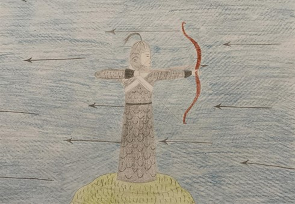

Ben Altın Arığ… Hakas Türklerinin kahramanlık destanı Altın Arığ’ın kadın başkahramanı… Bir ak kaya içinden çıkarak dünyaya geldim. İlerleyen zamanlarda Çibetey Han’ın isteği üzerine Altay Dağı’nda kalarak hayvanlara baktım. Hulatay ile Çibetey Han yurtlarında huzur içinde yaşarlar. Fakat çok geçmeden yurtları düşmanları tarafından talan edilir. Hulatay ile Çibetey düşman alplarıyla savaşırlarken ben de Ak Boz atımın üzerinde kara yüzlü, kara taş gibi gözlü düşmanlarla savaştım. Bu sırada Pora Ninci’nin oğlu beni arkamdan vurdu. Düşmanı vurması için ikaz etsem de Pora Ninci’nin oğlu beni dinlemedi. Bunun üzerine Hulatay ile Pora Ninci’nin oğlunu öldürmek zorunda kaldım. Cesedini de balıklar yesin diye Kara denize attım. Çift tırnaklı mitolojik bir yaratık olan düşmanı ve diğer altı alpı öldürdükten sonra Kara Han’ın ülkesini Çibetey Han ile Alp Han Kız’ın oğluna verdim. Oğlunun savaştan dönmediğini gören Pora Ninci, benden öç almak için silkinip yılana dönüştü. Ay Kara Taş adında birisi benimle evlenmek istedi. Yeğenim Kanlı Kılıç, bu yer altından gelen bahadırı bana layık görmediği için öfkelenip benden hesap sordu. Haddini bildirmek için onunla savaştım ve onu öldürdüm. Kanlı Kılıç ile Parlak Tana’nın dokuz gün dokuz gece süren düğününde çokça içki içip sarhoş oldum. Yaşlı bir kadının sorusu üzerine canımın ya da ruhumun Ak Tashıl dağının zirvesindeki Altın kayada bulunan altın tüylü, iki başlı guguk kuşunda olduğunu söyledim. Böylece kendi sırrımı ele vermiş oldum. Bunu öğrenen Pora Ninci yılan derisinden yapılmış uçan halısına binerek bu dağa geldi ve guguk kuşunu yakaladı. Ben de bu sırada savaşan iki alp gördüm, yenilmekte olan alplardan birinin kızı benden yardım istedi, üç yıl savaşarak diğer alpı öldürdüm. Dönüş yolculuğun sırasında şarkı söyleyerek kendiliğimden yaratıldığımı, halk için büyük acılar çektiğimi, ölüm vaktimin yaklaştığını anlattım. Çünkü dürbünümle Pora Ninci’nin uçan halısıyla uçmakta olduğunu gördüm. Pora Ninci guguk kuşunun birinci başını koparınca atım öldü ve cesedi kızıl kuma dönüştü. İkinci başını kopardığında ise ben öldüm ve kemiklerim beyaz kemik yığınına dönüştü. Aksakallı ve ak saçlı bir ihtiyar gelip kum yığınlarının içinden benim topuk kemiğimle atım Ak Boz’un toynağına ait küçük bir kemiği buldu. Bastonuyla benim topuk kemiğime üç kez vurunca bir alp ortaya çıktı. Ak Boz’un toynağına üç kez dokununca ortaya ak tavşana benzeyen bir at çıktı. Bu at ve alp, benimle Ak Boz’un neslinden idi. Yaşlı adam alpa Taptaan Mirgen, ata da Ak Oy adını verdi. Ayrıca Taptaan Mirgen’e yurtlarını yeniden kurması için bir de sarı kuşak verdi. Taptaan Mirgen, ihtiyarın kendisine verdiği sarı kuşakla yurdunu düşmanlardan temizledi. Böylece hayatlarını yeniden kurdular ve hayatlarını huzur içinde sürdürdüler.
